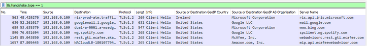

DNS over HTTPS (DoH) as a channel for C2 communication
Since DoH is in use, and what is the main focus of this article, there are DoH services offered by trusted vendors, this can be used as new style for old ideas. Main problem is that some DoH services such as these offered by Google or CloudFlare, are categorized and rated as trusted hosts and will not trigger alerts in detection systems. Traffic to such vendors is common in almost every organisation and it makes detection a lot harder.
DoH is using an approach which is designed for user privacy because everyone in your local network, ISPs etc can see DNS traffic. This is also a problem for Tor users etc. In short no one knows what you watch on youtube.com but everyone knows that you visit youtube.com because DNS queries are not encrypted as HTTPS traffic is. In fact these are not only DNS queries which leak VirtualHost (Apache [https://httpd.apache.org/docs/2.4/vhosts/index.html]) / Server Block (nginx [https://www.nginx.com/resources/wiki/start/topics/examples/server_blocks/]) name but also SSL/TLS certificates – it will be described below.
It is worth mentioning that DoT (DNS over TLS) services also exist but we will not focus on this because main target for this article is threat hunting and red teaming. DoT can be easy detected by simply monitoring the traffic to 853/tcp port. If no one in your organisation is using DoT, it is a quite new and not common standard, and only some hosts are starting to communicate using it, this is the reason why it is easy to detect it. We are not talking about what is better in a matter of privacy DoT vs DoH, so that is why we will not focus on DoT. Not to even mention that such ports usually will be blocked on the organisation firewall, what we can’t say about 443/tcp (HTTPS).
DoH is hard to detect due to the fact that whole communication is done over HTTPS, which is encrypted and considered common network traffic, there is nothing special that could easily trigger an alert about some malicious communication:
$ curl 'https://dns.google.com/resolve?name=example.com&type=TXT'
{"Status": 0,"TC": false,"RD": true,"RA": true,"AD": false,"CD": false,"Question":[ {"name": "example.com.","type": 16}],"Answer":[ {"name": "example.com.","type": 16,"TTL": 18585,"data": "\"v=spf1 -all\""}]}
Traffic for that request looks like this:
192.168.0.109 192.168.0.1 DNS 74 Standard query 0xfa6c A dns.google.com
192.168.0.109 192.168.0.1 DNS 74 Standard query 0xb49b AAAA dns.google.com
192.168.0.1 192.168.0.109 DNS 338 Standard query response 0xfa6c A dns.google.com A 216.58.215.110 NS ns2.google.com NS ns4.google.com NS ns3.google.com NS ns1.google.com A 216.239.32.10 AAAA 2001:4860:4802:32::a A 216.239.34.10 AAAA 2001:4860:4802:34::a A 216.239.36.10 AAAA 2001:4860:4802:36::a A 216.239.38.10 AAAA 2001:4860:4802:38::a
192.168.0.1 192.168.0.109 DNS 350 Standard query response 0xb49b AAAA dns.google.com AAAA 2a00:1450:401b:803::200e NS ns3.google.com NS ns4.google.com NS ns1.google.com NS ns2.google.com A 216.239.32.10 AAAA 2001:4860:4802:32::a A 216.239.34.10 AAAA 2001:4860:4802:34::a A 216.239.36.10 AAAA 2001:4860:4802:36::a A 216.239.38.10 AAAA 2001:4860:4802:38::a
OK, there is a communication to Google ASN but we can detect a query to DNS for dns.google.com record. This is a good approach, to monitor for DoH endpoints, but the problem is that an attacker can establish communication without this DNS query:
$ curl -k -H 'Host: dns.google.com' 'https://216.58.215.78/resolve?name=example.com&type=TXT'
{"Status": 0,"TC": false,"RD": true,"RA": true,"AD": true,"CD": false,"Question":[ {"name": "example.com.","type": 16}],"Answer":[ {"name": "example.com.","type": 16,"TTL": 5477,"data": "\"v=spf1 -all\""}]}
OK, better but still this can be detected for example by using Wireshark display filter such as:
tls.handshake.type == 1 && !tls.handshake.extension.type == 0
This can be also used for detection as column tls.handshake.extensions_server_name:

In case of direct communication with IP using just HTTP header “Host” to select VirtualHost/Server Block the “Server Name” column will not contain anything, and that can alert a threat hunter as such communication is not common.
Some time ago Deloitte Greece ethical hacking team presented a technique which they named in short the "LAME" technique [https://dotelite.gr/the-lame-technique/], quoting the authors: “It is possible to obtain a trusted SSL Certificate for a public DNS name resolving to internal IP address and use it for establishing encrypted communication channels [with C&C] within internal networks”. This is a good example how simple DNS based threat hunting can be effective. When a domain resolves to a LAN or non-routable IP address then certainly it should trigger an alert if some of your organisation computers are querying the DNS server for such domain.
Historically this was a technique used by bot masters to temporary deactivate botnets which for example were IRC based and the malware binary had a hardcoded domain. Each bot tried to reconnect in some period of time to the IRC server but when a domain started to point at localhost (IN A 127.0.0.1) then each bot switched to a standby state – wasn’t able to connect as there was no local IRC service, so it kept trying to connect and querying DNS for C&C domain after TTL time has passed. That way it was only possible to take down a botnet by controlling domain, because without this it was even not possible to see how large the botnet is as zombies (bot) were not connecting to the C&C, but tried connecting to localhost as long as the domain was pointing there, also short TTL (in DNS it is time in seconds) was in use. If a botmaster needed access to the botnet then it was all about starting the C&C and then changing DNS records, each zombie was reconnecting whenever the requested domain was pointing again to the C&C IP address.
Getting back to the "LAME" technique, the communication is indeed encrypted but as mentioned above, we can see the certificate details which are not encrypted in SSL/TLS initial communication (Client Hello), and that includes i.a. domains (as above, tls.handshake.extensions_server_name display filter in Wireshark). Now we see an external domain which is used in communication between two (or more) hosts in LAN, preceded with a DNS query that resolves to a LAN IP, isn’t this suspicious? Yes, of course it is, and it is one of simplest DNS based detection rules. In conclusion the authors of this technique write: “This can be used as a covert lateral movement technique, which bypasses intrusion detection / monitoring tools.”, but in fact it makes detection even more effective because when companies perform threat hunting then usually DNS based detection is in use as simplest threat hunting technique which doesn’t require any big investment. Not to even mention that in fact using this technique can trigger an IDS alert and probably there is less detection risk when we will not use it at all than when we make things harder… simple solutions work best. Even when we run a red teaming engagement or malware actors are performing attacks, less complicated things, less uncommon traffic etc make it harder to detect, even when there is plaintext communication. Let’s remember that usually in LAN sysadmins are communicating with servers by IPs or using internal TLD domains (like server.redteam, there is no TLD “redteam” but we can have any TLD we want in our internal network and it will only work for computers which are using our internal DNS server). How many times sysadmins are using external domains (which does not belong to the organization) to any internal HTTPS communication, zero? Personally I have never encountered such an approach.